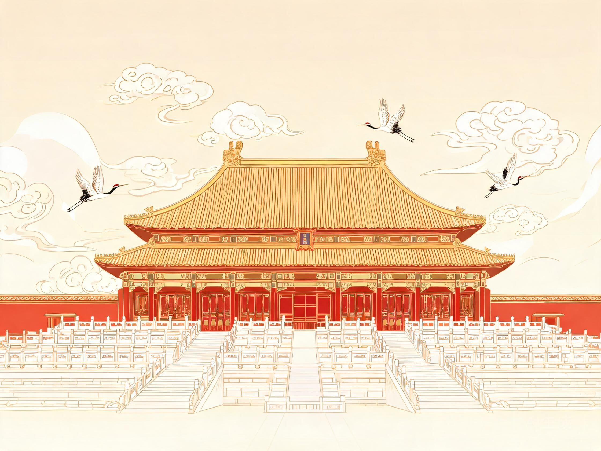

壹
Day 1 · The Imperial Axis
初识京华 · 中轴线上的六百年

上午
天安门广场 → 故宫博物院
抵达后安顿行李，前往天安门广场瞻仰人民英雄纪念碑与天安门城楼。随后由午门进入故宫，沿中轴线游览三大殿、乾清宫、御花园，东西六宫择精华参观，全程约 4–5 小时。
傍晚
景山公园 · 万春亭日落
自神武门出宫，过马路即达景山。登顶万春亭，俯瞰紫禁城全景，金色琉璃瓦在夕阳下绵延，是北京最经典的城市画面。
晚上
烤鸭接风宴
以一顿地道北京烤鸭开启旅程，鸭皮蘸糖入口即化，荷叶饼卷葱丝黄瓜，仪式感与美味兼得。
当日贴士故宫周一闭馆，需提前 7 天在「故宫博物院」小程序实名预约；午门为唯一入口，建议 8:30 开园即入，避开人流高峰。